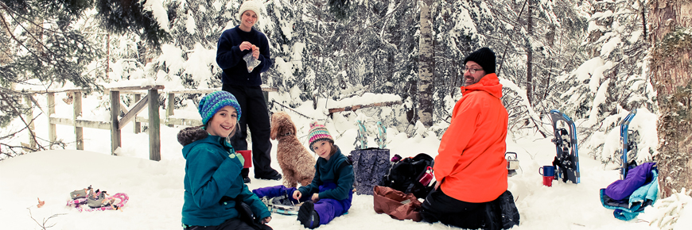

National Parks
National parks are a country-wide system of representative natural areas of Canadian significance. By law, they are protected for public understanding, appreciation and enjoyment, while being maintained in an unimpaired state for future generations. National parks have existed in Canada for well over a century.
Alberta
Waterton Lakes National Park
Waterton is quiet, uncrowded National Park. The Perfect place to view spectacular scenery, wildlife and enjoy outstanding recreational opportunities. Discover nature at its best... Year Round!... A rare gem tucked into the southwestern corner of the province of Alberta, Canada. In this breathtaking part of the world, the majestic Rocky Mountains rise suddenly out of the rolling prairies. Amid the peaks are the lakes of Waterton Lakes National Park, carved out of the rock by ancient glaciers.
Waterton Lakes National Park borders Glacier National Park in Montana to the south, together making up the Waterton-Glacier International Peace Park, the first of its kind in the world. A place like no other, the uniqueness of Waterton Park is a blend of unusual geology, mild climate, rare wild flowers, and an abundance of wildlife. It is a scene which has remained unchanged for centuries.
British Columbia
Pacific Rim National Park Reserve
In Long Beach, run barefoot through the sand, surf the waves, stroll along a boardwalk trail, & camp under the canopy of the rainforest. At the Kwisitis Visitor Centre discover the rich history & vibrant traditions of the Nuu-chah-nulth people and explore the plants and animals of the West Coast. Continue your adventure in the Broken Group Islands where paddlers and boaters will be delighted & amazed by hidden bays and clear waters.
Challenge yourself to the 75 km hike of a lifetime on the West Coast Trail.
A truly Canadian west coast adventure awaits you!
Manitoba
Riding Mountain National Park

Yellow goldenrods sway in prairie meadows and a gentle breeze blows through the aspen. Black bears pad along boreal trails and the piercing sound of elk bugling echoes around the forest. Visit Grey Owl’s historic cabin and see the enduring landmark of the East Gate. Go to sleep under canvas lulled by the sounds of night birds and wake to decide which of the 400 km of trails you’ll hike today.
You can see places to visit right here!
New Brunswick
Kouchibouguac National Park
Kouchibouguac National Park stretches along the Acadian Coastal Drive and boasts some of the warmest salt water north of Virginia.
Take the family for an unforgettable camping adventure. Cycle along fantastic bicycle trails or walk along endless stretches of sand dunes. At night, the sky is a true celestial masterpiece. In winter, it’s a snowbound fun-zone.
And each of these natural wonders intertwines with Mi’kmaq and Acadian cultures. Kouchibouguac National Park, your awe-inspiring all-season destination.
Open Year-Round
You can check more here!
Newfoundland and Labrador
Mealy Mountains National Park Reserve
ocated in Labrador, the glacially-rounded, bare rock summits of the Mealy Mountains reach up to 1180 meters to overlook Lake Melville. The pristine landscape of mountain tundra, marine coasts, boreal forests, islands and rivers are home to numerous boreal species. For thousands of years, ancient human cultures have also called this place home. For the Innu, Inuit, and others, the landscapes of this outstanding natural region hold great cultural significance. The traditional names of the park are Akami-Uapishkᵁ, an Innu word meaning White Mountains across, and KakKasuak, a Labrador Inuit word for mountain.
Northwest Territories
Nááts’ihch’oh National Park

Nááts’ihch’oh, named for a sacred mountain in its midst, is our newest park. Tucked against the Yukon border, it guards the headwaters of both the Nahanni and the Natla/Keele river systems. Paddlers can traverse the South Nahanni’s "rock garden," featuring 50km of continuous rapids, or try the less technical Broken Skull River, or put in on O’Grady Lake to descend the Natla/Keele. Wildlife includes grizzlies, mountain goats and the northernmost Dall’s sheep in Canada.
Nova Scotia
Kejimkujik National Park
Experience the unsurpassed beauty and natural wonder of the only Parks Canada site that is designated both a National Park and a National Historic site. Explore the wilderness trails, lakes, and rivers - by foot or by canoe or kayak. Discover historic, stone-carved petroglyphs left by the Mi’kmaq who traveled these same routes thousands of years ago. At night, sleep under stars that shine without the interference of artificial light, in a park that is also a designated Dark Sky Preserve.
For ocean-lovers, the Kejimkujik National Park Seaside is a bounty of white sand beaches, turquoise waters, and abundant shorebirds and wildlife.
Nunavut
Auyuittuq National Park
A zig-zag skyline of craggy granite peaks and glittering glaciers overlooks tundra valleys and steep-walled fiords whose winding waterways teem with narwhal and ringed seals, Auyuittuq is a diverse and grand-scale Arctic experience. Hike alongside icy, thundering streams and amid wildflower-dotted meadows. Traverse Akshayuk Pass, a natural corridor through a landscape of towering rock - a haven for experienced mountaineers and backcountry skiers. Spot snow geese, Arctic foxes, and human-shaped Inuksuit basking in Midnight Sun.
Explore more here!
Ontario
Thousand Islands National Park
Explore the first National Park established east of the Canadian Rockies. Here rugged shorelines mingle with opulent Gilded Age estates to create and unexpected and enchanting landscape. Navigate or paddle between the park’s 20 islands located between Kingston and Brockville, hike an island or one of the three scenic mainland properties. Stay the night in your tent or in an oTENTik by the water. Come discover the Visitor Centre at Mallorytown Landing, which features aquariums and small live animals, a kids activity area, a playground and special exhibits. However you choose to experience the park, this accessible wilderness will foster a lifetime of treasured memories.
Operating: May to October
Prince Edward Island
Prince Edward Island National Park

Gentle surf strokes sandy beaches alongside red cliffs and wind-sculpted dunes. Cycle a seashore path, savour a picnic by a lighthouse and spot heron wading in coastal bays. Hike woodlands and overlook ponds watching for red fox, waterfowl and warblers, then head to one of many beaches to build spectacular sandcastles. At sunset, roast marshmallows over a campfire listening to tales and songs - Prince Edward Island National Park is a giant playground for kids of all ages.
Find more here!
Quebec
Parc National du Mont-Mégantic

Ascending Mont Saint-Joseph or Mont Mégantic, discovering ASTROLab and the astronomy observatories and exploring the mountain and the sky make Parc national du Mont-Mégantic a place where activities "from the Earth to the sky" come together in perfect harmony. This park, which was created in 1994, is an increasingly popular year-round outdoor destination. It is the only scientific attraction of its kind in Québec, at the heart of the first International Dark Sky Reserve.
Find more here!
Saskatchewan
Prince Albert National Park
Whether your idea of adventure is portaging a canoe between remote forest lakes or a day of pulse-racing waterskiing and wakeboarding, Prince Albert National Park satisfies with a mix of wilderness and accessibility.
Hit the beach or get on the water in Waskesiu, the lakeside town that serves as the park’s hub. Or leave civilization behind as you hike, explore backcountry lakes and maybe even spot wild bison.
Find more here!
Yukon
Kluane National Park and Reserve

Kluane – high in the mountains of southwest Yukon – is a land of extremes. The park is home to Canada’s highest peak (5,959-metre Mount Logan), its largest ice field and North America’s most genetically diverse grizzly population. Travellers from around the world come to traverse alpine passes on backcountry odysseys and raft past calving glaciers. With exceptional day hikes and highway-side scenery, Kluane awes from every angle.
Plan your visit here!